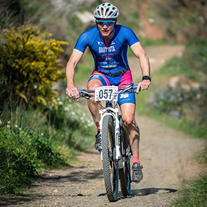
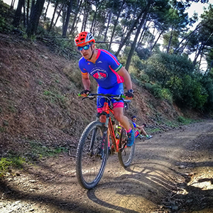

Club Triatlón Bahía de Málaga
El 25 de Enero del año 2011, un grupo de 12 amigos se quedaban sin club donde poder compartir entrenamientos, esa tarde lluviosa empezaría a tomar forma en un garaje, la creación de un nuevo club en el cual disfrutar de lo que más nos gustaba...después de algunas reuniones, charlas y demás lo que era un proyecto se convirtió en realidad... Nace lo que más nos gusta... “Club Triatlón Bahía de Málaga”.
| Directiva | ||
|---|---|---|
| José Antonio Bautista Muñoz | Germán Muñoz Reina | Javier Mata Rando |
|  |  | |